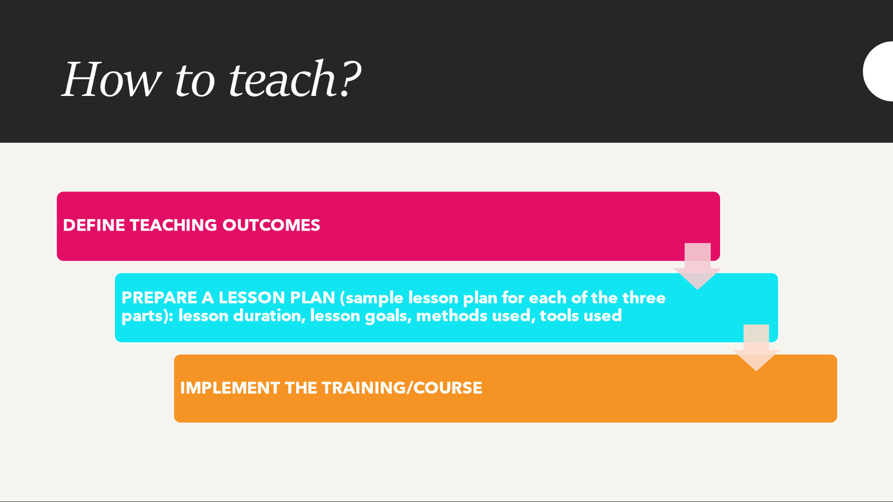
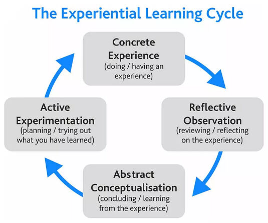
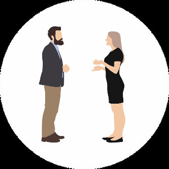
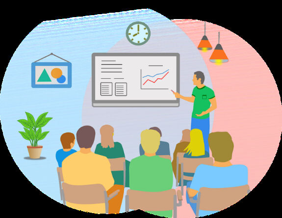
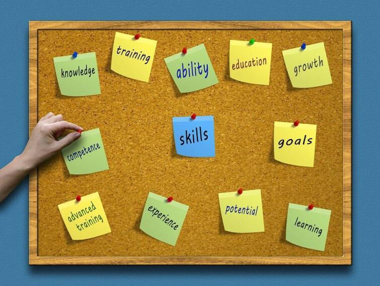
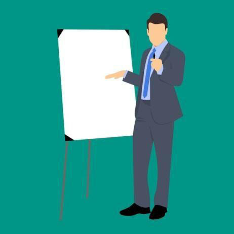
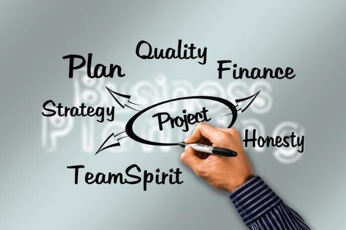
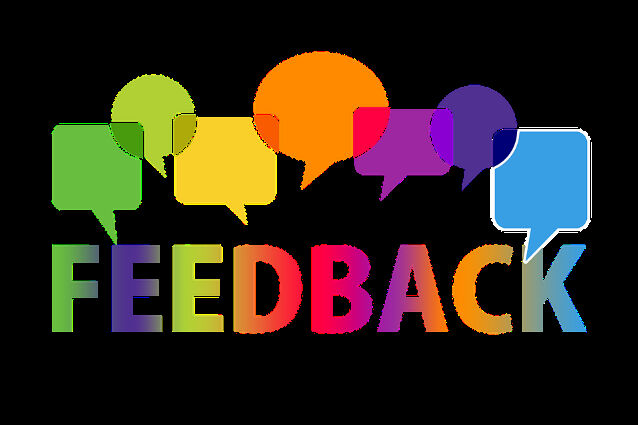

Trainees Edition
Trainers Edition
Trainees Edition
Trainers Edition
Module 18: General Guidelines for Trainers
Module Description
This module helps trainers design, implement, and evaluate lessons about (Modules 1-17) different aspects of news literacy. The materials comprise 17 different topics belonging to three content parts:
- Part 1: Understanding the News Landscape, Modules 1-8
- Part 2: Media and Journalism, Modules, 9-11
- Part 3: Thinking Critically About News, Modules 12-17
The topics can be used by experienced educators and other professionals who are already teaching news literacy as well as by those with less teaching experience who are interested in running workshops and/or training courses for adult learners about news literacy. The training materials are extensive and diverse. Each topic presents an independent chapter and can be taught separately from other topics. It contains goals, learning outcomes, and suggestions for structuring the training as well as suggestions of some teaching and learning activities. In these Guidelines for Trainers we:
- present some characteristics of adult learners
- present different roles of a trainer
- describe teaching methods and techniques that can be used when teaching news literacy
- guide trainers in preparing their teaching sessions by providing a structure of a lesson plan
Content: General Guidelines for Trainers
Characteristics of Adult Learners
The project targets different groups of adults and aims to improve their news literacy and critical thinking skills. Adult learners learn for many different reasons and when doing so they usually acquire a certain set of skills. Some adult learners learn to finish an education programme they started and did not finish in their youth or adolescence. They learn to be promoted at work, to retain their job position or to get a job in the first place. They learn to change their career. They learn to obtain knowledge they need in their free time, when performing their hobbies, when traveling. They learn to keep up with demands of changes in daily life brought about by digitalisation of society etc.
As diverse as reasons for learning are also learners’ characteristics. Adult learners differ by age, gender, education level, socioeconomic status, employment status, interests, beliefs, mental capabilities, motivation level for learning etc. They play different life roles: parents, employees, children, friends, partners, colleagues, citizens. Their news literacy needs at 30 are different from their news literacy needs at 50 or 65 and depend on a variety of the aforementioned factors. Therefore, considering a truly diverse specter of adult learners’ needs is crucial for every trainer working with adult learners.
According to Malcolm Knowles’ The Modern Practice of Adult Education – from Pedagogy to Andragogy adult learners require self-assertion and individual learning. Moreover, adults demand for recognition of their status. Studies on adult education highlight the experiential method in which they can best assimilate the knowledge taught. Adults make connections between concepts not by memorizing or learning structure but by reference to an experiential context. Thus, subjective ideas, presumptions and opinions are generated towards the curriculum which can enhance the teaching method and improve delivered content.
Older adults are more active in learning situations where they have no doubts or worries about their learning abilities and are more motivated and active in tasks they perceive as important, useful, and meaningful in their daily lives. Therefore, the choice of educational methods is linked to the notion of learning: learning as self-transformation, learning as a better understanding of life, learning as a search for personal meaning, learning as the accumulation of information for later use (Radovan, October 2019, slide 6)
Many trainers expect their trainees to behave like "mature people". And when inappropriate behavior occurs, it can quickly become the subject of condemnation or even insult. Most of the time, the problem is already in the mind-set of the trainer ("They are not children, they will read it for themselves!"), which is reflected in their attitude to teaching. An effective educator is aware that he or she also has a role as an educator, not just as a messenger of information (Morano, August 2013, p. 5).
Adults’ Learning Capabilities
It has long been accepted in the profession that "the capacity to learn increases until the age of 20, then stops for a few years and then declines" (Jelenc, Sabina, 1996, p. 21). Discoveries about brain function deny this, although with age there is a deterioration in the senses (vision, hearing), in speed (physical and intellectual response) and in physical strength (but not intellectual strength). Adults' learning abilities depend above all on the constancy of their mental activity. A healthy adult who is always mentally active may be slower to learn content of which he or she has no experience, or which is quite different from his or her own experience but will remember it as well as a young person. However, adults remember content that matches their experience even faster than young people. Considering that adults tend to be more emotionally stable than young people (which allows them to focus better on the content) and that they are more patient (which allows them to be more persistent in achieving the learning objectives), training providers should not be worried. An effective trainer in the delivery of content enables learners to relate the content to their own experiences and to see the relevance to their own lives and work (Morano, August 2013, p. 6).
Planning Training About News Literacy

The training materials prepared in this project are rich and extensive. What part of training content shall a trainer use – all modules or only specific ones? What are the criteria to select training materials for giving a workshop, a seminar, or a longer course about news literacy?
When deciding what content to use, we prepared some questions for a trainer to help him/her make decisions that are in best interest of his/her learners:
- Who are my learners and what are their characteristics (age, education level, employment status, social circumstances, motivation to participate in training etc.)?
Tip: Try to gather as much information as possible about your learners so you can prepare adequately. You can ask the organizer of the training to provide you with some of the data, you can prepare a short online form and send it to learners before the start of the training.
- What are the main gaps in learners’ knowledge?
Tip: A simple way to check learners’ existing knowledge is to prepare a short online (self)evaluation form about the content you are going to teach and gather learners’ answers when preparing for the training.
- How much time is there available for training?
Tip: Be realistic. If you are preparing for a four-hour workshop, make sure you do not take too much content and dedicate all the training to lecturing. Make sure that no matter the duration of the training you prepare activities that are relevant for learners and which they can relate to their experience.
- What is the delivery mode: face-to-face mode, online mode, blended delivery mode?
Tip: Delivery mode has a big impact on teaching delivery and has its specifics. Make sure you adapt activities according to delivery mode. If you deliver training online, think about how you are going to retain motivation, when you are going to make breaks, how you are going to ensure that participants are active (e.g., divide them into separate online rooms to work in groups or pairs). In case of face-to-face training check how big the room for teaching is and what equipment does it have?
- How am I going to know whether learners have achieved learning goals?
Tip: There are several ways to get feedback from your learners. You can prepare a short evaluation form, a self-evaluation form for learners, a quiz etc.
Duration
The duration of the training should be in accordance with learners needs, learning goals and time available. Trainers can prepare and implement different types of training:
- 1-day workshops about a particular topic
- seminar
- longer course
Trainers and Learning Process
Trainers are teachers of various subjects, librarians, educators in public adult education centers, universities of third age, individuals with no formal teaching education who run workshops in NGOs, etc.
“Treat people as if they were what they ought to be, and you help them to become what they are capable of being.”
Johann Wolfgang Goethe
The modern education provider knows that he or she cannot teach anyone anything but can only help them to learn. That's why all his or her personal preparation for education is based on the mission: "I help people learn and I learn while doing it." The modern educator does not bother with too much material set out in the course book and curriculum, because he knows that with the right personal preparation for education and the right way of managing the learning process, he or she will encourage them to learn certain parts of the material for themselves. We have already seen in the explanation of the concept of 'adult' that even adults still need an educator, because the process of maturing takes place throughout life. Of course, this is truer for longer forms of education, but even in one-day training we can see a change in the behavior of the participants (Morano, August 2013, p.16).
Trainer as Information Messenger
Transmitting information is one of the basic communication skills that can be used in a short explanation or clarification as well as in a longer lecture. To transmit information effectively, it is crucial to follow these principles (Marentič Požarnik, 2018, p. 244):
- Clarity, comprehensibility (announce the aim and structure, i.e., introduction, core, conclusion; refer to prior knowledge and experience, provide good examples, use visual materials)
- Emotional engagement (show personal involvement, vivid imagery, linking to existing interests).
- Mental activation of the participants (problem-based format of the intervention, intermediate questions for reflection).
- Coherence between verbal and non-verbal communication.
Asking Questions
Asking questions is one of teachers’ core activities, but unfortunately, the questions asked are predominantly lower cognitive questions that require only memory reproduction. Higher level questions require thinking, comparing, analyzing, or inferring. The proportion of these questions may increase if teachers are alerted to this.
The strategy for asking questions is also important: the teacher asks the whole group a question, waits, then calls on a participant and waits for an answer. The waiting time is of paramount importance for the quality of the participant's reflection and answer (Marentič Požarnik, 2018, p. 245).
An effective trainer focuses on the learners and on the results and avoids lengthy lectures, preferring to prepare a varied sequence of his/her own activities and those of the learners. This means that if the trainer has been the source of the messages, he/she will keep them short and allow the participants to do something with the messages afterwards: they can process them or use them to solve a practical task.
Methodology
The adult population has its own learning characteristics, and the choice of education methods is very important. The selection of methods is also influenced by (Radovan, October 2019, slide 4-5):
- Objectives and content of the selection
- The characteristics of the learning group
- The psychological needs that are considered in the selection of methods
- The lecturer's or tutor's conceptions of learning.
- The objectives and content of the training should pay attention to:
- The taxonomy of objectives (Bloom’s Taxonomy)
- More practical or more abstract content
- Motivational power of the content
- What methodological approaches does it allow?

Source: https://cft.vanderbilt.edu/guides-sub-pages/blooms-taxonomy/, January 2022
The education methods most suitable for older people are group and experiential education methods. These include: the discussion method, the problem-solving method, the project-based learning method, the exploration method, and others (Radovan, October 2019, slide 10-11).
Experiential Learning
The term "experiential" suggests that such learning is focused on experience. The theory was developed by David A. Kolb (1984) based on research by Dewey, Lewin and Piaget on the importance and role of experience in learning. According to Kolb, experiential learning is the process of transforming experience into knowledge (Morano, August 2013, p.18).
Kolb Cycle
The first stage is about experiencing or reliving the experience, the second stage is about reflecting on the experience, the third stage is about forming conclusions and the fourth stage is about actively trying to validate the conclusions:
- Concrete (real, sensory) experience
- Reflection on the experience
- Abstract (conceptual, mental) conceptualisation (idea, way of doing, way of happening)
- Active experimentation
Example of an activity:
Step 1: Learners read an article that is fake news without knowing it. The article is taken from training materials (concrete experience).
Step 2: Learners reflect on their experience while reading the article (reflective observation):
How did you feel when reading the article?
Do you find the information presented trustworthy? Why? Why not?
Step 3: Learners learn about characteristics of fake news based on the article (abstract conceptualization).
Can you identify any signs that the news is fake?
What are they?
What can we learn from them?
How can you use this knowledge in the future?
Step 4: Learners try out what they have learned (active experimentation).
Students read two different pieces of news: one is fake, and one is trustworthy. They try applying gained knowledge when identifying fake news.

Source: https://www.skillshub.com/what-are-kolbs-learning-styles/, January 2022
Lesson Plan
Education is like a theater performance. The director of a theater performance has a script to make sure that the theater performance achieves its purpose and runs smoothly. The same applies to the education provider. He/she is also the director of the performance. The special feature of this performance is the participation of the audience. This can lead to surprises, which is why the training plan (script) is extremely important. Why? There are at least three arguments for the importance of the lesson plan:
- Preparing the details of the components of the training is more effective (the lesson plan allows the trainer to have the whole lesson in front of him/her and to be able to deal with the details according to their importance for the success of the lesson).
- The delivery of the training is facilitated (the trainer can adapt the course of the training during its delivery).
Preparation for training repetitions is shorter and quicker (the trainer refreshes the course when the training is repeated, perhaps slightly revises the scenario in line with the comments he/she has written down or received after the first delivery and focuses on the specificities of the new group).
The scenario is initially only an indicative plan for the delivery of the training. During the personal preparation for the training, the trainer continuously returns to this outline plan, completing and modifying it. The final version of the scenario is only created just before the training starts. The scenario contains the order in which the different components of the training will take place, their description, approximate duration, and the necessary aids. The format can be very simple e.g.:
|
Theme |
Activity of the trainer |
Activity of the learners |
Aids |
Time |
The components of the training scenario are:
- warm-up and getting to know each other
- bonding around common goals
- activities of the trainer to achieve training objectives (e.g., short interactive lectures on specific topics, giving instructions, monitoring, and supervising the processes, giving feedback, moderating the processes, etc.)
- learners’ activities
- breaks (to allow participants to meet informally and share experiences; to refresh and satisfy physiological needs; and to allow the trainer to assess the compliance of the training with the scenario and to decide on possible changes to the follow-up)
- extra time to deal with unforeseen problems
- evaluation
In the next part of the Guidelines, at least one method and technique will be discussed for:
- warming up and getting to know each other
- bonding around common goals
- trainers’ activities to achieve training objectives
- learners' activities in pursuit of the objectives
- evaluation of the training
Teaching Methods and Techniques
Ice Breakers
At the start of the training, participants have mixed feelings:
- curiosity,
- expectations,
- uncertainty,
- embarrassment
- anxiety, etc.
Individuals seek their place within the group and identify the central personalities of the group. Extraverted participants can hardly wait to speak up, introverted ones are silent and just observe. The group emits a tense energy to which many trainers react with trepidation.
An effective trainer is aware of the need to release tension, so he or she starts the meeting with the so-called "Ice Breakers". These activities allow learners to start preparing themselves for a new environment and a new event (Morano, August 2013, p.20-21).
Individual Warm-up Method
Each participant draws a picture of themselves at work (or themselves in their private life) on A4 paper (even better on A3 paper, or even on a poster if you can afford it). It is useful in terms of time for the trainer to show his/her example beforehand, but if you want more creativity, it might be better to give them all the freedom. Each person then pastes their product on a section of the wall marked "Who are we?" (or "Here we are:") and explains in one minute (standing up) what they wanted to show with the picture. They can take turns to report, they can choose a person to report by passing a "tennis ball" or similar object from one to another, the trainer can ask "Who will be the first to present what he/she has drawn?" and then (after thanking him/her).

Suitable number of participants: up to 10.
Duration: one minute for drawing and one minute for debriefing
You need: one A4 sheet (A3 or even a poster) for each participant, a marker, and a piece of tape (Morano, August 2013, p. 21).
Warm-up in Pairs
Divide the participants into pairs (they can be neighbors; they can be people who do not know each other; the criterion can be a suitable playing card which each person draws when they enter the room). Tell and show the instruction, which contains a maximum of 3 questions to be answered by each person in the pair, while the other listens, because then he/she will tell the others his/her partner's answers. If the participants do not know each other yet, the questions can be related to identifying the work the partner does, interests, life experiences, etc. If the participants know each other, the questions may be related to experience of the content you will be covering in the training.

Source: People Talking Gesturing - Free vector graphic on Pixabay
Suitable group size: 8-12 participants
Duration: four minutes for the pair discussion and one minute for each of the individual presentations.
You need: instructions, a clock, a sound device (e.g., gong, bell) (Morano, August 2013, p 21-22).
Warm-up in Small Groups
Divide participants into groups of 3 or 4 (can be by proximity: "You three will be a team, you three ...", can be by the coloured sticker they were given on arrival; can be by birthdays (from 1-31) and then count off the same number of participants in turn). Each group goes to their poster and is asked to write up to three things standing up (can be three things that link them; can be answers to questions, etc.). Then, in each group, choose the person to present their poster. The trainer decides whether each group will present all the findings or only part of them, depending on the task.

Source: Meeting Conference General - Free vector graphic on Pixabay
Suitable group size: 9-25 participants (there can be more participants, but then it is not necessary to present everything they have written, and it may not even be necessary for each group to present - it is sufficient to have met the participants who will also participate later).
Duration: maximum of three minutes for the group task and one minute for each group to report back.
You need: a poster and a marker for each group, instructions, a clock, a sounding device (e.g., bell) (Morano, August 2013, p. 22).
Exercise for Team Building and Strengthening Effective Communication – Paper Tie
Draw a tie on A4 paper and cut it out. Write 3 statements on the tie, one of the statements is false and the other two are true. Each participant pins the tie to his/her shirt or upper part of his/her clothes. All participants or group members walk around the room and interact with as many members as possible. The main task is to find out which of the written statements is true and which is false. At the end of the exercise, give all members the opportunity to share their feelings and findings with the others. The purpose of the exercise is mainly to get to know the members of the group, but also to strengthen listening skills.
Individualized Co-design Method
First, each participant circles the three most interesting goals on his/her list. Then, for each goal presented, the trainer asks for a show of hands of those who have circled it. The number of votes is then written on the poster and the three with the most votes are circled. The trainer then asks the participants to write their wishes and expectations that were not covered by the objectives on the cut sheets of felt-tip paper.
The facilitator collects the completed sheets and pastes them on a part of the wall marked "We are interested in:" (or "Wishes and expectations:"). For the Desires and Expectations sheets that seem like him/her, he/she checks with the authors whether they really think alike and decides whether to group the sheets together or to have each one represent its own category. He moves the wishes and expectations that are not in line with the purpose of the training to another place and explains where, when and how they can realize their wishes.

Duration: 20 seconds for selection, one minute for voting, one minute for writing the wishes and expectations, 3-5 minutes for analysis of the sheets.
You need: a poster with the goals and a poster with the serial numbers of the goals, a felt-tip pen, a piece of A4 tape cut into three strips for each participant and a felt-tip pen for each participant (Morano, August 2013, p. 22-23).
Co-designing Objectives in Small Groups or Pairs
First, each participant circles the three most interesting objectives on his/her list. The group leader makes a sheet to record how many votes the members have given to each goal. When the reporters report their results to the trainer, the trainer writes them down on a poster. He/she then circles the three with the most votes. The trainer then asks the groups to agree on a maximum of three common expectations (they can write them on the poster, or they can write them on cut sheets of paper, as in the individual method).
Reporting is done in a "word circulates" method, each group saying only one wish or expectation. Once the circle is complete, the debriefing is repeated as many times as necessary and for as many rounds as necessary to allow the trainer to write down everything. Once all the wishes and expectations have been recorded, the trainer circles the ones that can be accepted as a goal in this training, and for the others, indicates where, when and how they can realize them, or (if they don't know) how they will find out about this information.

Source: Confident Businessman Presentation - Free image on Pixabay
Duration: 1 minute to make the list, 1-2 minutes to debrief (depending on the number of groups), 2 minutes to write the wishes and expectations, 3-5 minutes to write down the wishes and expectations and analyze them.
You need: poster with objectives (or a projector and a poster with the serial numbers of the objectives), felt-tip pen (Morano, August 2013, p. 23).
Interactive Lecture (Presentation)
The most important thing about interactivity is to encourage learners to participate while receiving the information.
The trainer encourages learners:
- to demonstrate understanding (checking if learners follow):
- What type of disinformation does the Martian Invasion example present?
- What are the characteristics of misinformation?
- Why is this piece of news characterized as disinformation?
- What is the main difference between a troll and a bot?
- to express their opinion on the information presented:
- Why do people create information disorders? Can you think of some reasons?
- Why are social media important in the creation of information pollution?
- We have seen how mental shortcuts, confusions, and illusions encourage us all to believe things that aren’t true. Which cognitive mechanisms make you believe things that aren’t true – is it confirmation bias, motivated reasoning, maybe cognitive dissonance?
- What are the negative sides of echo chambers? Are there any positive sides, too?
- to give examples from their own experience:
- Have you ever come across Internet trolls? What made you think it was a troll activity.
- Can you name any positive effects of algorithms?
- Are you aware of any echo chambers you are part of?
The purpose of the encouragement is extremely important. Participants can identify the intention of the practitioner from the tone of voice and body language (Morano, August 2013, p. 24).
Moderating Group Processes
Group processes during training include discussions, debriefing, giving, and receiving feedback and evaluation. The facilitator's most powerful tool is a wide range of questions (Morano, August 2013, p. 24-25).
Questions that broaden the way learners think:
- Let's look at this more broadly. How will this affect our work?
- Who has different experiences?
- What should we do next?
- What do you think about (the proposal)?
Questions to respond positively to suggestions, opinions and views of participants that are at first sight misguided or wrong:
- in the search for ideas to solve the problem:
- This is one possibility. What else is possible?
- Thank you. What other options are there?
- What else will we add to this list? etc.
- in the discussion:
- What does this have to do with ...?
- How can this affect ...?
- How did you come to this conclusion? etc.
Questions that aim to achieve a common understanding (clarity) among all participants:
- What exactly do you mean?
- What evidence can you give for this?
- What is the reason you think this?
- How might this affect your work/situation/understanding...?
Monitoring and Assisting Participants in Group Activities
After the instruction for the participant activity, the trainer turns into an observer. The purpose of the observation is to check the understanding of the task (when we observe body language, we make sure that the participants really understand what is expected of them) and to make a judgment about the need for intervention (help).
For participant activities that take place in pairs or small groups, first allow the participants to organize themselves and discuss the purpose of the task. If he/she detects signs of uncertainty, he/she approaches them and asks how he/she can help them. He/she also intervenes with groups that have not yet written anything on the poster (this is another reason for standing meetings and writing on posters) and when he/she notices disunity within the group (one person holding back, only two people discussing, etc.). In such cases, he/she approaches the group, asks where they have come to and then uses a question to encourage the passive participant to participate (Morano, August 2013, p. 26).
Individual Method for Learning from Previous Experience
This method allows participants to relive their experiences and learn from them, or to share their experiences with other participants to enable them to learn from their experiences. The trainer could conduct this activity in the form of a discussion. Ask the group about their experience of a particular issue. However, there is a danger that the extrovert and quick thinkers would speak up and the others would not get a chance to speak. By directly singling out individuals, it could embarrass some (especially the introverted participants).
Therefore, an effective trainer should first allow everyone to briefly reflect on the answer to the question. He or she may even prepare a worksheet or part of a page in the participant handout for this purpose. Say: "Think about a news article that you were uncertain about in terms of truthfulness. Take 1 minute to think about it and write down your thoughts." For introverted participants, this minute will allow them to process at least one experience, while extraverted and quick thinkers will discipline themselves to select the best from the crowd of thoughts during this time.
The second step is to reflect on what has been learned. Under the first box in the material there may be a second box (blank, without instructions). After 1 minute, the trainer might say: "Here is another frame for you to write down what you have learnt from this experience. Take 20 seconds and write down your insights."
The next step is to report your experience. Depending on the experience with the whole group so far, the trainer decides on the method of debriefing:
- using Word Circle technique and record contributions on a poster or on a whiteboard
- using a tennis ball or similar technique to select a spokesperson
- moderating a discussion in which he/she makes sure that everyone contributes something (here again, he/she writes the contributions on a poster or on the board).
The trainer may also decide to contribute some of his/her own experience or that of another person. The decision depends on the quality of the contributions so far. The method concludes with the question: "So what can we learn from our own experience?". This question can be answered by the participant (summarizing what has been written), by moderating a discussion or by organizing group work (a group task could be: 3 observations).
Suitable number of participants: up to 10. More participants are welcome, but not all of them will be able to present their experience.
Duration: 1 minute to think on paper, 3-5 minutes to present and analyze the experience, 3-5 minutes to draw conclusions. 7-11 minutes in total.
You need: a worksheet for each or a space or cut sheets of paper, a whiteboard, or posters to write on, a felt-tip pen (Morano, August 2013, p. 27-28).
Group Method for Learning from Previous Experience
This method allows participants to do the same as the individual method. It is suitable for bigger groups who are divided into smaller groups. In a small group, everyone contributes and learns from the others. Then everyone can learn from the findings of the other groups.
The start of a group method can be like the start of an individual method: 1 minute to think on paper. This individual preparation allows for a better quality of participation in the group.
Individual preparation is followed by group work. Standing poster sessions are shorter and make it easier for the facilitator to follow the work of the participants. In groups, participants should discuss their experiences, choose one that is interesting for others and write about what they have learned from this experience. The group that finishes early can choose another experience and write a lesson for that one too.
After three minutes, the trainer sounds an acoustic signal to signal the end of the task. The groups that have not yet finished are reassured, saying, "What you have is enough." The group with the fewest findings (so that they have at least something to contribute) can start the debriefing and continue with the "word circle" technique, so many rounds that each group presents everything they have written. In case of time constraints, the facilitator may decide to make a shorter presentation, with each group presenting only one finding.
In the group method, the trainer may also decide to add one of his or her own or another person's experiences. And even in this method, he/she concludes with the question: "So what can we learn from our own experience?" and answers the question himself (summarizing what he has written), moderate a discussion or organize group work (a group task could be: 3 observations).
Suitable group size: 9-25 participants.
Duration: maximum of three minutes for the group task and one minute for each group debriefing.
You need: a poster and a marker for each group, instructions on a transparency or on a poster, a clock, a sounding device (triangle, horn, gong, bell) (Morano, August 2013, p 28-29).
Group Method for Learning from Insights (Collaborative Learning)
This method allows participants to do the same as the individual method and follows similar guidelines as the group method for experiential learning.
Collaborative learning is effective in a "mature group" - a group in which:
- all individuals are aware of the positive interdependence of all group members and their different team roles,
- all group members take turns in leadership positions,
- rules for equal and effective communication are agreed and followed by the members.
The group needs time to mature. During maturation, the group progresses from the Orientation stage, through the Dissatisfaction stage and the Resolution stage to the Production stage.
Learning from Watching a Demonstration
A demonstration is a practical demonstration by the trainer of the process or activity under discussion (e.g., how to verify a photo by using online verification tools, and how to use Boolean search logic). It allows participants to have a new experience or to compare it with an experience they have already had. The demonstration achieves its purpose when the participants themselves repeat the process or activity. In preparation for the demonstration, the trainer asks:
- What exactly am I trying to demonstrate?
- Into which stages can I divide a process or activity?
- How can I give them a concrete experience?
- What can go wrong with the demonstration and how can I prevent it?
- What will I do if the demonstration or any part of it goes wrong?
- How will I know that the demonstration has achieved its purpose?
After the demonstration has been carefully prepared, the trainer prepares an instruction for the participants, explaining what will happen, focusing their attention on the important points and announcing what will happen after the demonstration. He/she then prepares a post-demonstration briefing for the participants, allowing them to work individually or in groups.
Similarly, learning from watching a video and learning from listening to an audio recording is also done, as the trainer knows the content of the recordings and can prepare all four stages of the Kolb cycle accordingly (Morano, August 2013, p. 32).
Learning from a Case Study
A case study is a story about something special, unique, and interesting to learn from someone else's experience. It can be the story of an individual, an organization, a process, a programme or even an event.
The most important part of this method is a well-crafted description of a real case from practice, but a good case study goes beyond a simple case description. In preparing a case study, the trainer asks similar questions as when preparing for the demonstration method, plus:
- How will I attract the attention of the trainees and make them want to read the text carefully? - What will they get out of reading?
- How will they benefit?
- How can I enable them to quickly parse it?
Some tips:
- The case should contain proof of veracity (e.g., a zoomed-in screenshot of an article reporting the incident).
- Start by describing the problem or question you want the reader to answer, then give them the information they need to come to their own conclusions.
- The text describing the case should be no more than one A4 page with a font size of at least 12 pixels. Longer case studies are suitable for activities taking place during training sessions.
- Although you can prepare different case studies that individuals, pairs, or groups can then present to others, it is more effective to have all participants working on the same case at the same time.
- The text of the case should be given to each participant. People have different perceptual abilities, so it is important to give everyone the opportunity to study the case as they see fit. In collaborative learning, reading aloud can even be distracting for other groups.
- The case study method can take 15-45 minutes. There is a risk that the faster individuals (pairs, groups) will have finished, and the slower ones will be far from finished. It is therefore important to divide the process into several stages (familiarizing with the case, reflecting on the case, analyzing, and conceptualizing abstractly, testing the validity of the findings), to time each stage, to stop the process after each stage (with a sound signal) and to balance the work of the groups by debriefing (Morano, August 2013, p 32-33).
Project Work
Both independent and collaborative project work have excellent results in adult education, as they enable adults to reach their full potential. Collaborative project work has additional "side" effects, such as learning to cooperate, interpersonal communication and project management.

Project work is a time-consuming method, so it is usually used during or after training sessions. Important components of project work include (Morano, August 2013, p 34):
- defining the purpose and objectives
- the identification of resources and
- the definition of the means of delivery
- setting a deadline for completion.
The Discussion Method – A Fundamental Method in Adult Education
The characteristics of the discussion method are:
- The democracy of the relationship
- Two-way communication
- Participant involvement
- Ability to argue
It has a particular quality because the knowledge gained in discussion is more lasting, more emotionally tinged, develops a value system and attitudes. The discussion method does not require much preparation on the part of the tutor, but it does require a thorough examination of the learning group in terms of background knowledge and group attitudes, etc.
Source: 900+ Free Discussion & Conversation Images (pixabay.com)
When does the discussion method fail?
- Unrealistic expectations of the teacher
- Non-cooperation of the participants
- Lack of ground rules (discussion).
- Use in a poorly formed group (Radovan, October 2019, slide 12-15).
Evaluation
There are many different methods and techniques for evaluating what has been learned, to name a few:
- individual presentation of what has been learned
- making a poster
- the production of a project assignment
- knowledge test
- quiz
- self-evaluation from
- etc.

Source: Feedback Report Back Balloons - Free image on Pixabay
If you have time, you could organize a quiz or similar game in the form of a competition between groups or individuals. The tasks may require knowledge, speed of answering, demonstration of skills (Morano, August 2013, p. 36).
Tips to Run a Training
In the end, you might get inspired by five final tips to run a training:
- Make your session interactive: Ask questions, play a quiz, give participants puzzle-like-photos, play a video, and always ask for participants to respond. Make them talk to each other, in groups, make them report on what they discussed.
- Make your session dynamic: Try not to sit while giving a presentation or doing other training activities. While giving a presentation, ask questions, use a controversial statement, give participants time to pause and think, speak loudly enough and do not look at the slides too often but at your audience. Use different kinds of activities to create dynamics. Sticking to a presentation only may not be the best idea.
- Make your session meaningful to your participants: Invite participants to share their experience, to think about their own examples, to observe how session activities make them feel.
- Be moderate: When creating a presentation try not to put too much text on the slides. 5 -/+ 2 pieces of information per slide should be enough. It is also great to include photos, a short video, infographics, table etc.
- Ask for feedback: Ask participants what they gained from the training, what they would wish to hear about the topic if they came to another workshop. You can prepare a short evaluation form, a quiz or simply ask participants to write their feedback on self-stick notes etc.
References
Erasmus+ KA1 Mobilnost osebja v izobraževanju odraslih z naslovom Kakovost v izobraževanju odraslih; Nabor dokumentov, orodij, tehnik, vaj in metod. Firence 6. 12 – 11. 12. 2021
Florea, R. (2014). Teaching Methods in Adult Education. An Appraisal of the Effectiveness of Methods Used in Training Future Teachers. Procedia - Social and Behavioral Sciences, 142, 352–358.
Jelenc, S. (1996). ABC izobraževanja odraslih. Ljubljana, ACS.
Marentič Požarnik, B. (2018). Psihologija učenja in pouka. DZS
Morano, M. (August 2013): Sodobni pristopi, metode in tehnike v izobraževanju odraslih. Ljubljana.
Radovan, M. (October 2019). Temeljne metode izobraževanja starejših. Ljubljana
Rasi, P., Vuojärvi, H., & Ruokamo, H. (2019). Media Literacy Education for All Ages. Journal of Media Literacy Education, 11(2), 1-19.